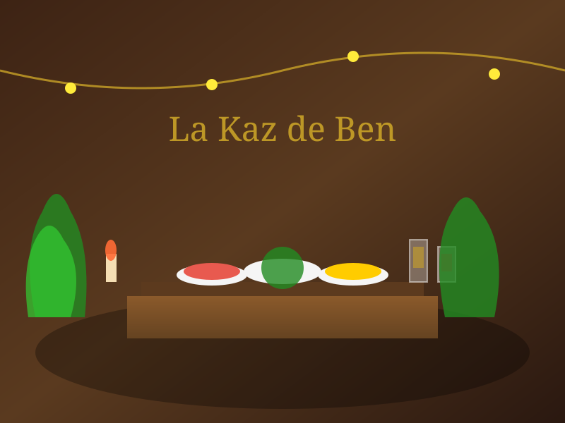
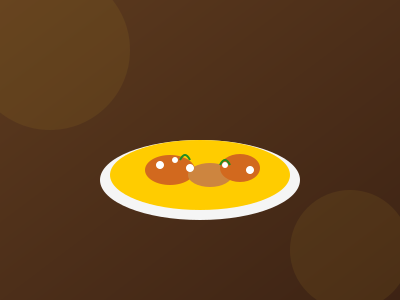
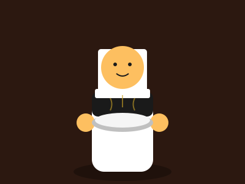
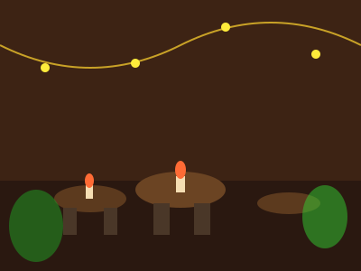

Best-seller
Carry Poulet
Poulet mijoté dans une sauce aux épices créoles, servi avec du riz blanc et des grains.
14€
⭐ 4.9
Un lieu de vie convivial et sincère où le Chef Ben vous accueille avec une cuisine généreuse, faite maison, mêlant traditions françaises et saveurs d'ailleurs.




Un lieu de vie convivial et sincère où le Chef Ben vous accueille avec une cuisine généreuse, faite maison, mêlant traditions françaises et saveurs d'ailleurs.
Profitez d'une ambiance chaleureuse et d'une terrasse intimiste à Saint-Gilles-les-Hauts. Notre restaurant est le fruit d'une passion pour la cuisine créole authentique, transmise de génération en génération.
Profitez d'une terrasse intimiste et d'une atmosphère conviviale
Dînez en plein air dans notre jardin tropical, éclairé à la bougie pour une atmosphère romantique.
Séga et maloya en fond sonore pour une immersion totale dans la culture réunionnaise.
Observez Ben et son équipe préparer vos plats avec passion et savoir-faire.
Notre carte des vins met en valeur les productions de l'île de La Réunion.
Des souvenirs gustatifs partagés par nos visiteurs
Une expérience authentique ! Le carry poulet est tout simplement délicieux, on sent que c'est fait avec amour. La terrasse est super agréable le soir.
Ben est un chef passionné qui prend le temps de venir discuter avec ses clients. On se sent vraiment comme à la maison. À ne pas manquer à Saint-Gilles !
Meilleur rougail saucisse de l'île, c'est unanime ! Les portions sont généreuses et les prix très raisonnables. Je recommande vivement.
Profitez d'une soirée inoubliable dans notre restaurant. Appelez-nous directement pour réserver votre table et découvrir nos spécialités.